오늘 만들 영상 두 편
지난 시간에 못 한 "비트에 맞춘 연말 사진 릴"을 먼저 끝내고, 이어서 "글자 뒤로 사람이 지나가는 타이틀"을 만듭니다.
1오늘 흐름 한눈에
화면 캡처는 누르면 크게 볼 수 있습니다.
두 작품 모두 유료(프로) 기능을 씁니다. 사진 릴은 프로 음원·프로 전환·프로 텍스트 템플릿, 인물 타이틀은 동영상 배경 자동 삭제가 핵심입니다.
2시작 전 준비 필수
- 캡컷 PC 프로그램을 열고 내 프로 계정으로 로그인 (왼쪽 위에 Pro 표시 확인)
- 설정 → 저장 위치가 D드라이브 내 폴더로 되어 있는지 확인
- 설정 → 프록시(편집용 가벼운 사본) 켜져 있는지 확인
- D드라이브 내 폴더 안에 「2회차 재료」 폴더 하나 만들기
3캡컷 홈 화면 다시 보기
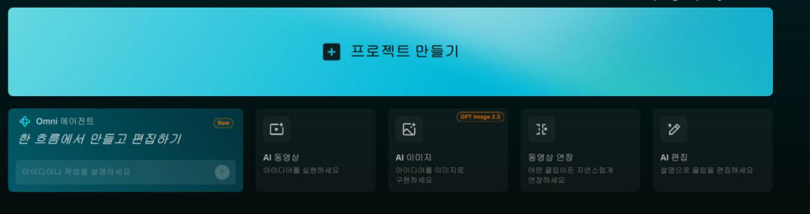
홈 화면 맨 위 「프로젝트 만들기」로 새 작업을 시작합니다. 아래에는 Omni 에이전트, AI 동영상, AI 이미지 같은 AI 도구가 모여 있습니다.
재료 모으기
사진은 세 가지 방법 중 하나로, 걷는 사람 영상은 아래 목록에서 하나를 골라 받습니다.
1연말 사진 구하는 3가지 길
| 방법 | 어디서 | 좋은 점 | 주의 |
|---|---|---|---|
| A. 직접 만들기 프로 | 캡컷 미디어 → 생성 → AI 이미지 | 내가 원하는 장면 그대로 | 모델마다 크레딧이 다름 (아래 2번 카드) |
| B. 캡컷 라이브러리 | 캡컷 미디어 → 라이브러리 → 「크리스마스와 새해」 | 프로그램 안에서 바로, 영상도 있음 | 남들도 많이 씀 |
| C. 무료 사진 사이트 | 펙셀스(Pexels) · 픽사베이(Pixabay) | 실제 사진이라 자연스러움 | 영어 검색어가 더 잘 나옴 |
사진은 6~8장이면 충분합니다. 섞어서 써도 됩니다.
2A. AI 이미지로 만들기 프로
- 새 프로젝트 → 왼쪽 생성 → AI 이미지
- 모델을 누르고 고르기
- 설정을 2K · 16:9로 맞추기
- 아래 프롬프트(그림 주문서)를 붙여 넣고 생성
- 나온 4장 중 마음에 드는 것의 ＋를 눌러 담기
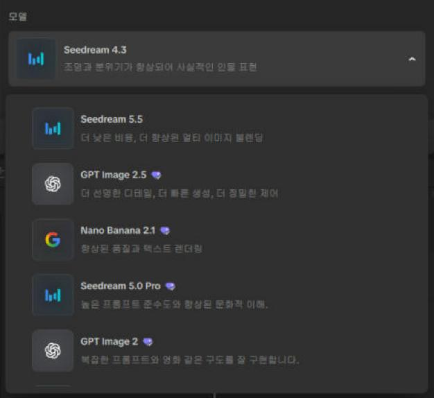
모델 목록. 보라색 보석 표시가 붙은 것은 프로 전용 모델입니다.
- Seedream 5.0(보석 표시): 강사 프로 계정에서는 크레딧 숫자가 표시되지 않았습니다. 오늘 실습 추천.
- Seedream 4.3: 생성 버튼에 Free 표시. 무료로 넉넉히 연습할 때.
- Seedream 5.5: 한 번 생성에 76크레딧이 표시됐습니다. 오늘은 쓰지 않습니다.
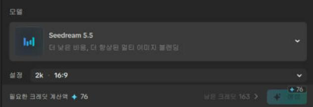
Seedream 5.5를 고르면 아래에 「필요한 크레딧 계산액 76」이 뜹니다. 생성 버튼 위 숫자를 꼭 보고 누르세요.
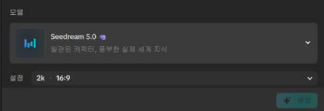
Seedream 5.0: 크레딧 숫자가 안 뜸
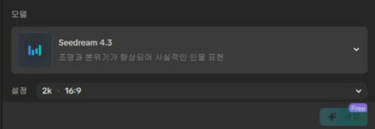
Seedream 4.3: 생성 버튼에 Free
3복사해서 쓰는 연말 사진 프롬프트
원하는 것만 골라 쓰세요. 6장을 다 만들면 바로 릴 한 편이 됩니다.
눈이 내리는 겨울밤, 전구 장식이 반짝이는 골목길 작은 카페 앞, 따뜻한 노란 창문 불빛, 사람 없는 거리, 시네마틱 와이드 샷, 얕은 심도, 16:9
창가 원목 테이블 위 마시멜로가 올라간 핫초코 머그잔과 작은 촛불, 창밖에 눈이 내리는 풍경, 따뜻한 주황빛 조명, 클로즈업, 배경 흐림
크리스마스 트리 아래 빨간 리본으로 포장한 선물 상자 여러 개, 금색 전구 보케가 반짝이는 배경, 포근한 거실, 정면 로우 앵글, 고급 광고 사진 느낌
새해 첫날 밤 강 위로 터지는 화려한 불꽃놀이, 물에 비친 도시 야경, 장노출 사진 느낌, 와이드 샷, 선명하고 화려한 색감
연말 가족 저녁 식탁 위 따뜻한 음식과 와인잔, 건배하는 손들만 보이는 장면, 테이블 위 촛불과 솔방울 장식, 따뜻한 색감, 위에서 비스듬히 내려다본 앵글
어두운 배경 앞에 떠 있는 금색 숫자 풍선 "2027", 주변에 흩날리는 반짝이 종이 꽃가루, 스튜디오 조명, 정면 샷, 축하 분위기
4B. 캡컷 라이브러리에서 가져오기
- 미디어 → 왼쪽 라이브러리 → 크리스마스와 새해
- 마음에 드는 것의 ↓(내려받기) 누르기
- 내려받은 뒤 타임라인으로 끌어 놓기
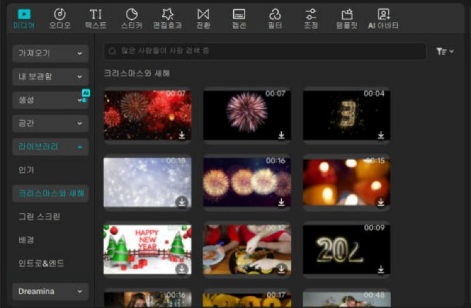
불꽃놀이, 눈, 새해 인사 영상이 이미 준비돼 있습니다. 사진 대신 짧은 영상을 섞어도 좋습니다.
5C. 펙셀스·픽사베이에서 받기
- pexels.com 접속 (회원가입 없이도 받을 수 있습니다)
- 검색창에 영어로 검색 → 아래 검색어 추천
- 사진을 누르고 무료 다운로드 옆 ∨ → 큰 사이즈 선택
- 받은 파일을 D드라이브 「2회차 재료」 폴더로 옮기기
| 찾는 장면 | 검색어 |
|---|---|
| 밤거리 크리스마스 | christmas street night |
| 반짝이는 전구 배경 | christmas lights bokeh |
| 새해 불꽃놀이 | new year fireworks |
| 포근한 연말 식탁 | cozy christmas dinner |
| 선물 포장 | gift wrapping |
6걷는 사람 영상 고르기 (작품 ②용) 필수
글자 뒤로 사람이 지나가려면 아무 영상이나 되지 않습니다. 아래 4가지를 모두 갖춘 영상이어야 합니다.
| 영상 | 장면 | 방향 | 화질 | 추천 |
|---|---|---|---|---|
| 강사 견본 ① 구글 플로우 공유 링크 | 벽돌 카페 앞을 걷는 남자 (AI로 만든 영상) | 왼쪽 → 오른쪽 | 360p, 15초 | 오늘 시연 영상 |
| 강사 견본 ② 구글 플로우 공유 링크 | 민트색 벽 앞을 걷는 남자 (AI로 만든 영상) | 왼쪽 → 오른쪽 | 360p, 15초 | 벽이 단순해서 글자 넣기 쉬움 |
| 펙셀스 ① pexels.com/video/8126439 | 노란 벽·빨간 문 앞을 지나가는 남자 | 왼쪽 → 오른쪽 | 1080p | 걸음이 가장 고름 |
| 펙셀스 ② pexels.com/video/6951582 | 보라색 벽 앞, 스케이트보드를 든 여자 | 왼쪽 → 오른쪽 | 1080p | 끝까지 지나가 화면 밖으로 |
| 펙셀스 ③ pexels.com/video/5899455 | 어두운 셔터 앞, 꽃을 든 여자 | 오른쪽 → 왼쪽 | 1080p | 반대 방향 연습용 |
비트에 맞춰 넘어가는 연말 사진 릴
음악의 "쿵" 하는 박자마다 사진이 바뀌는 15~20초 영상입니다. 같이 1편을 만들고, 시간이 남으면 템플릿으로 1편 더 만듭니다.
1새 프로젝트 만들고 사진 넣기 필수
- 홈 → 프로젝트 만들기
- 가져오기 → 장치에서 → 「2회차 재료」 폴더의 사진을 Ctrl 누른 채 여러 장 선택 → 열기
- 미디어 창에서 사진을 모두 선택(Ctrl+A)해서 타임라인으로 끌어 놓기
- 타임라인 위 프로젝트 이름(맨 위 가운데)을 두 번 눌러 「연말 릴_내이름」으로 바꾸기
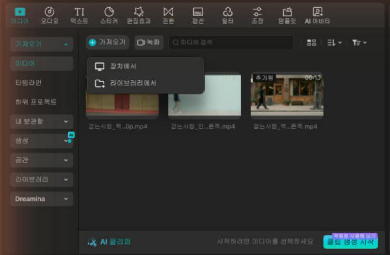
가져오기를 누르면 「장치에서」(내 컴퓨터)와 「라이브러리에서」(캡컷에 저장된 것)가 나옵니다.
2음원 넣기 프로
- 위쪽 메뉴 오디오 → 왼쪽 음악
- 검색창에 christmas 또는 new year 입력 → Enter
- 곡 이름을 눌러 미리 듣고, 마음에 들면 ↓(내려받기) → 타임라인 사진 아래로 끌어 놓기
- 음악 시작을 0초로 맞추기 (음악 클립을 맨 앞으로 끌기)
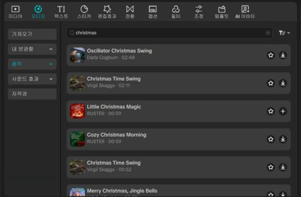
「christmas」로 검색한 화면. 1분 안팎의 짧은 곡이 릴에 쓰기 좋습니다.
3음악에 비트(박자) 표시 찍기 필수
- 타임라인에서 음악 클립을 한 번 누르기
- 타임라인 위 도구 모음에 생긴 「자동 비트 표시」 버튼 누르기 (하트 모양 옆 아이콘, 마우스를 올리면 이름이 보입니다)
- 음악 클립 위쪽 테두리에 청록색 작은 네모가 일정한 간격으로 생깁니다. 이게 박자 위치입니다
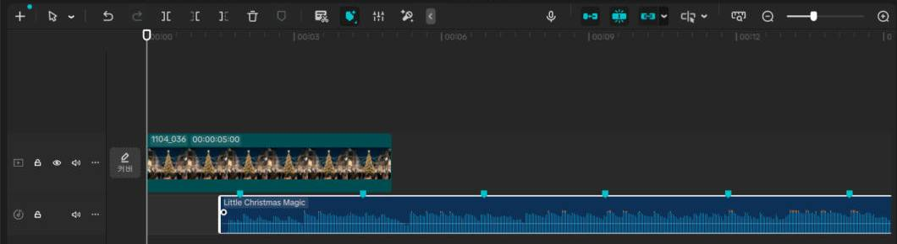
음악 클립 위 청록색 네모들이 자동으로 찍힌 비트 표시입니다.
사진의 끝을 청록색 비트 표시에 딱 붙이면, 박자마다 사진이 바뀝니다.
4박자에 맞춰 사진 길이 맞추기 필수
- 사진 1의 오른쪽 끝을 잡고 첫 번째 비트 표시까지 끌기 (자석처럼 착 붙습니다)
- 사진 2, 3… 차례로 같은 방법으로 맞추기
- 마지막 사진 끝에 맞춰 음악도 자르기: 재생 헤드를 끝에 두고 음악 클립 선택 → Ctrl+B(분할) → 뒤쪽 조각 Delete
- Space로 재생해서 박자마다 사진이 바뀌는지 확인
5프로 전환(장면 넘김 효과) 넣기 프로
- 위쪽 메뉴 전환
- 보석 표시가 있는 전환을 미리 보고, 사진과 사진 사이로 끌어 놓기
- 오른쪽 패널에서 길이를 0.3~0.5초로 짧게 (박자가 살아납니다)
- 모두에 적용을 누르면 모든 사진 사이에 같은 전환이 들어갑니다
6키프레임(움직임 표시점)으로 천천히 다가가기
- 사진 1을 누르고, 재생 헤드를 사진 맨 앞에 두기
- 오른쪽 동영상 → 기본 → 확대 옆 ◇를 눌러 100%에 점 찍기
- 재생 헤드를 사진 맨 뒤로 옮기고, 확대를 115%로 바꾸기 (점이 자동으로 하나 더 생깁니다)
- 사진 1을 선택한 채 Ctrl+Shift+C(특성 복사) → 나머지 사진을 모두 선택하고 Ctrl+Shift+V(특성 붙여넣기)
7프로 텍스트 템플릿으로 연말 인사 넣기 프로
- 위쪽 메뉴 텍스트 → 텍스트 템플릿
- 검색에 Christmas 또는 Happy New Year
- 마음에 드는 템플릿을 마지막 사진 위 트랙으로 끌어 놓기
- 글자를 두 번 눌러 내 문구로 바꾸기 (예: 2026, 고마웠어요)
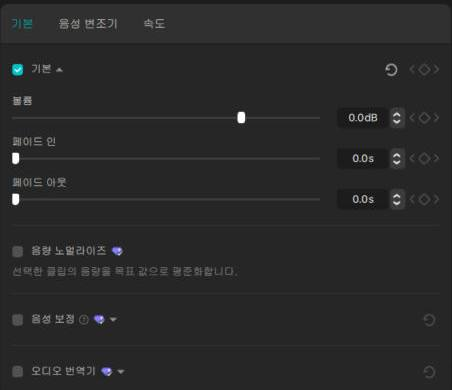
8한 걸음 더: 프로 템플릿으로 1편 더 선택
- 홈 → 왼쪽 템플릿 → 검색 연말 또는 Christmas
- 보석 표시 템플릿 → 템플릿 사용
- 자리마다 내 사진을 바꿔 끼우고 → 한 군데(글자나 사진 하나)는 내 손으로 고치기
손으로 만든 1편과 템플릿 1편을 나란히 놓고 비교해 보세요. 어디가 더 "내 것" 같나요?
글자 뒤로 사람이 지나가는 타이틀
큰 제목 글자 앞으로 사람이 걸어 지나가는 영상입니다. 같은 영상을 두 번 깔고, 위쪽 영상에서 배경을 지우는 게 핵심입니다.
1원리: 3층으로 쌓기
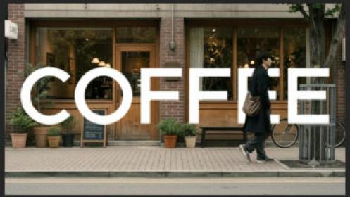
완성 예시 (강사 견본 ① 영상). 남자가 글자 F와 E 사이를 가리며 지나갑니다.
2영상 넣고 똑같이 하나 더 깔기 필수
- 강사 견본 ① 벽돌 카페 (왼→오): 플로우 링크
- 강사 견본 ② 민트색 벽 (왼→오): 플로우 링크
- 펙셀스 ① 노란 벽·빨간 문 (왼→오): pexels.com/video/8126439
- 펙셀스 ② 보라색 벽 (왼→오): pexels.com/video/6951582
- 펙셀스 ③ 셔터 앞 (오→왼): pexels.com/video/5899455
- 새 프로젝트 → 걷는 영상 가져오기 → 타임라인으로 끌어 놓기 (1층)
- 타임라인의 영상을 누르고 Ctrl+C → Ctrl+V
- 같은 영상이 위쪽 트랙(층)에 하나 더 생깁니다. 시작점이 0초로 딱 맞는지 확인
- 위쪽 영상 트랙 왼쪽의 스피커를 눌러 소리 끄기 (소리가 두 번 겹치지 않게)
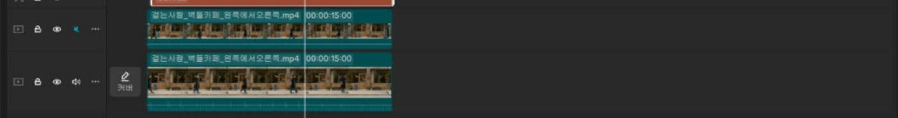
같은 영상이 두 줄. 시작점이 정확히 같아야 사람이 어긋나지 않습니다.
3위쪽 영상의 배경 지우기 프로
- 위쪽 영상을 누르기 (아래쪽 아님!)
- 오른쪽 패널 동영상 → 배경 제거
- 자동 삭제 체크 (보석 표시 = 프로 기능)
- 「처리 중 ○○%」가 끝날 때까지 기다리기 (15초 영상 기준 수십 초)
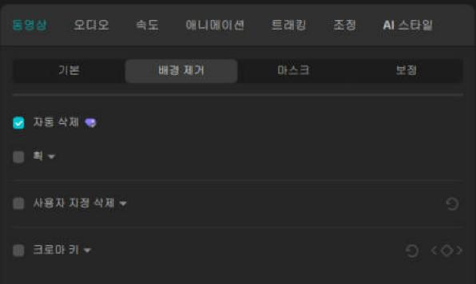
배경 제거 탭. 「자동 삭제」 옆 보석 표시가 프로 기능이라는 뜻입니다.
4큰 제목 글자 넣기 필수
- 위쪽 메뉴 텍스트 → 기본 텍스트를 타임라인으로 끌어 놓기
또는 텍스트 템플릿에서 보석 표시가 있는 큰 타이틀을 골라도 좋습니다. - 오른쪽 텍스트 칸에 제목 입력 (예: COFFEE, WINTER, 2026)
- 글꼴 크기 40 안팎, 굵게(B) 켜기, 굵은 글꼴 고르기
- 글자 클립 끝을 끌어 영상 길이(15초)만큼 늘리기
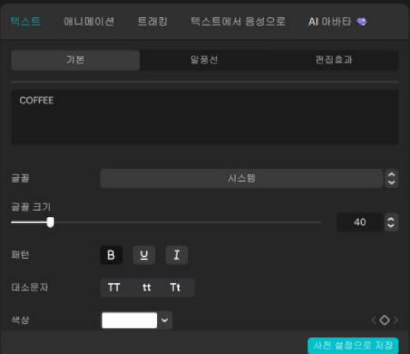
5글자를 두 영상 사이로 옮기기 필수
처음에는 글자가 맨 위에 생겨서 사람 위에 덮여 보입니다.
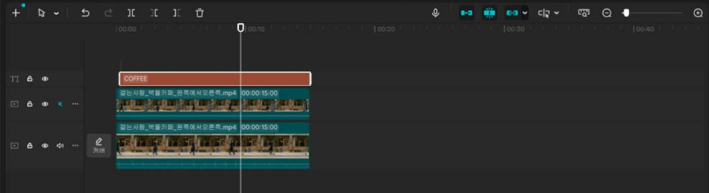
글자(빨간 클립)가 맨 위 → 사람보다 앞에 보임
- 글자 클립을 잡고 두 영상 줄 사이로 끌어 내리기
- 순서가 위: 배경 지운 영상 / 가운데: 글자 / 아래: 원래 영상인지 확인
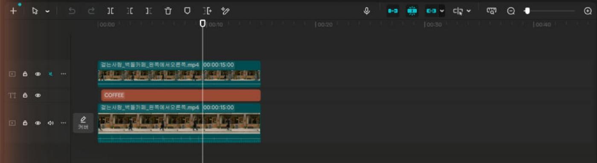
완성된 순서. 오른쪽 미리보기에서 사람이 글자 앞으로 지나갑니다.
6글자 자리 맞추고 확인하기
- 글자는 사람의 허리~가슴 높이에 두세요. 너무 위에 있으면 사람 머리 위로 그냥 보입니다.
- 사람이 지나가는 길 위에 글자를 두세요. 사람이 안 지나가는 곳은 가려지지 않습니다.
- Space로 재생하며 사람이 글자를 가리는 순간을 확인합니다.
- 사람 테두리가 지글거려요 → 영상 화질이 낮아서입니다. 1080p 영상으로 바꿔 보세요.
- 글자가 사람 앞에 그대로 보여요 → 배경 지운 쪽이 위쪽 영상인지, 글자가 가운데인지 다시 확인.
- 사람이 두 명처럼 어긋나 보여요 → 위아래 영상 시작점이 다릅니다. 둘 다 0초로 맞추세요.
7프로 효과음으로 마무리 프로
- 오디오 → 효과음 → 검색 whoosh(휙 지나가는 소리)
- 사람이 글자 한가운데를 지나는 순간에 맞춰 넣기
- 글자 클립을 누르고 애니메이션 → 시작에서 나타나는 효과를 하나 골라 첫 1초에 넣기
8한 걸음 더 선택
- 영상 만들기 전에 시작·끝 이미지를 내 눈으로 먼저 확인 (방향, 자세, 배경). 이미지 단계에서 고치면 크레딧이 들지 않습니다.
- 구글 플로우는 시작+끝 이미지를 같이 쓰면 최대 10초, 15초는 시작 이미지만 됩니다.
- AI 영상은 걸음이 완벽히 일정하지 않습니다. 중간에 느려지거나 끝에 빨라질 수 있어요.
내보내고, 올리고, 로그아웃
공용 PC라서 이 순서를 꼭 지킵니다.
1영상 파일로 내보내기
- 오른쪽 위 내보내기
- 이름 정하기, 해상도 1080p, 저장 위치 D드라이브 내 폴더
- 내보내기 → 끝나면 폴더에서 재생해 확인
- 휴대폰으로 보내려면 카카오톡 「나와의 채팅」에 파일 올리기
2프로젝트를 내 공간(스페이스)에 올리기 필수
- 편집 창 오른쪽 위 ✕로 닫고 홈으로
- 프로젝트 썸네일 오른쪽 아래 ⋯ → 업로드
- 내 공간 고르기 → 업로드
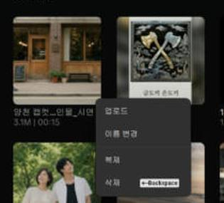
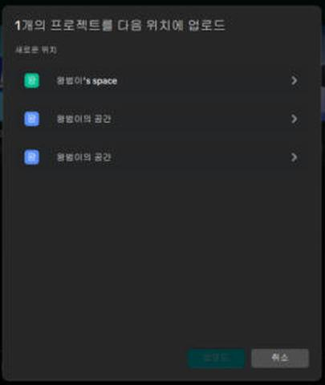
유료 계정은 재료(사진·영상)까지 같이 올라가서, 집에서 로그인하면 그대로 이어서 편집할 수 있습니다.
3로그아웃 필수
- 홈 왼쪽 위 내 프로필 → 로그아웃
- 다운로드 폴더에 남은 재료 파일 정리
- 브라우저(펙셀스 등)에서도 로그인했다면 로그아웃
4오늘 쓴 유료 기능 정리
| 기능 | 어디서 | 어디에 썼나 |
|---|---|---|
| AI 이미지 (시드림) | 미디어 → 생성 | 연말 사진 만들기 |
| 프로 음원 | 오디오 → 음악 | 비트 릴 배경 음악 |
| 프로 전환 | 전환 | 사진 사이 넘김 |
| 프로 텍스트 템플릿 | 텍스트 → 텍스트 템플릿 | 연말 인사, 큰 타이틀 |
| 동영상 배경 자동 삭제 | 동영상 → 배경 제거 | 사람만 남기기 |
| 프로 효과음 | 오디오 → 효과음 | 휙 지나가는 소리 |